Simple, evidence based strengthening for the muscles that support your knee. No gym required, and you do not need to lift heavy to get the benefit.
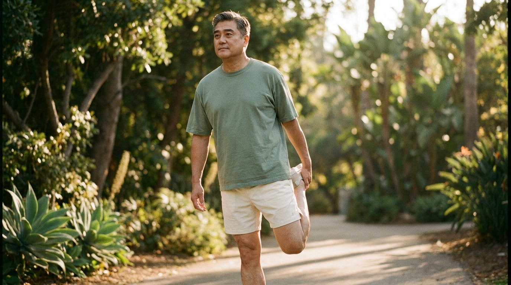
Strong legs are the knee’s shock absorbers. A few minutes, a few days a week, is enough to start.
The muscles around your knee, mainly the thigh and hip, act as the joint’s natural shock absorbers. When they are stronger, they share the load with each step, so the knee itself carries less. Strengthening is one of the most reliable, best studied treatments for knee osteoarthritis, and every major guideline recommends it(1, 2, 3). The reassuring part: you can do almost all of it at home, and you do not need heavy weights.
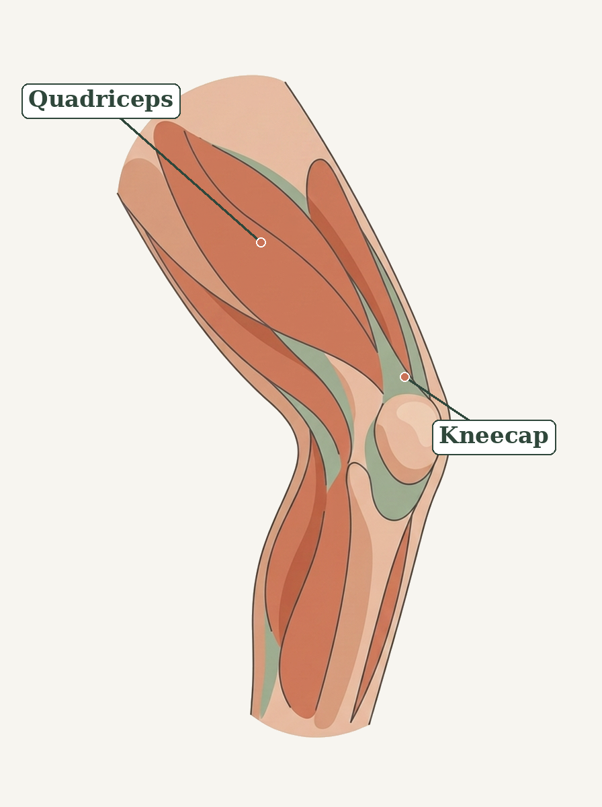
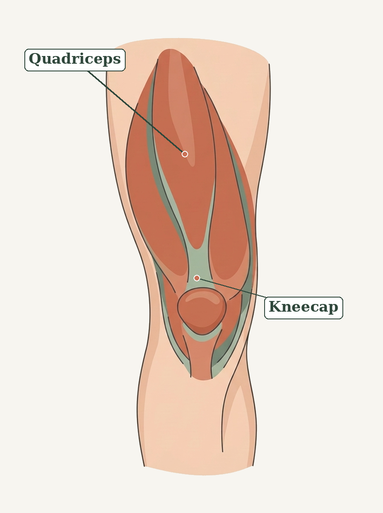
The quadriceps wraps down over the kneecap. Building it up lets the muscle take load off the joint.
Weak thigh muscles (the quadriceps) are both a cause and a consequence of knee OA, which is why building them back up is a cornerstone of care(4). In the largest review to date, the 2024 Cochrane review of 139 trials, exercise improved knee pain by roughly 9 to 13 points and physical function by about 10 to 13 points on a 0 to 100 scale, depending on what it was compared with. The reviewers were careful to call these real but modest gains, the kind that build with consistency rather than overnight(5). Stronger muscles also steady the joint, so the knee feels less wobbly and more dependable.
This surprises people. In a large 18 month trial (the START trial), lifting heavy and lifting light produced about the same improvement in knee pain. What matters most is doing it regularly and with good form, not how much weight is on the bar. Start gentle, stay consistent, and let strength build over weeks(6).
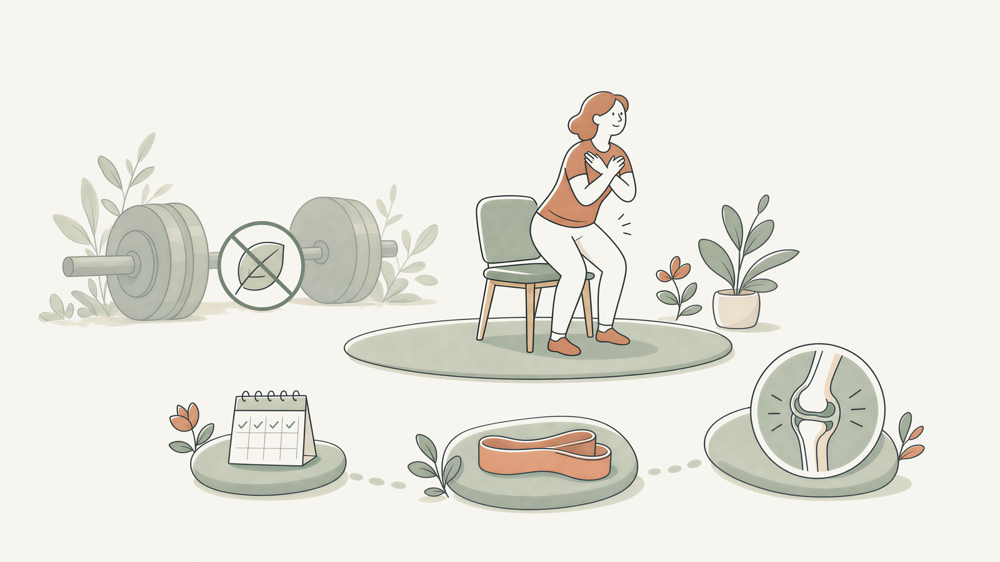
Gentle and regular beats heavy and harsh. A chair, a band, and a few days a week is enough to build a stronger knee.
A good knee routine covers the three muscle groups that support and unload the joint:
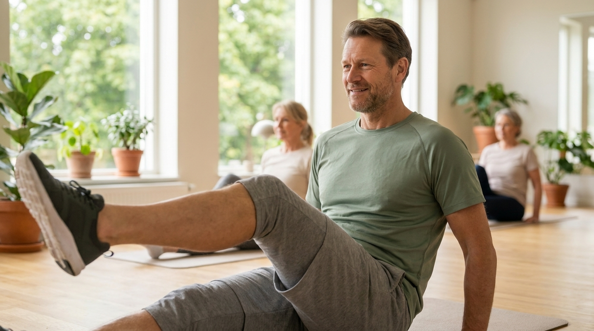
A little goes a long way. Simple lower body work, on the floor or in a class, builds the muscles that protect the knee.
Aim for 2 to 3 sessions a week on non consecutive days, so the muscles have a day to recover in between. Each session takes about 15 to 20 minutes. Work at a low to moderate effort, the kind where the last couple of repetitions feel like work but never sharp. Progress slowly: add a repetition, a set, or a little resistance only once the current level feels easy.
These are the core moves. Do each one slowly and with control, both lifting and lowering. Begin with 2 sets of 8 to 10 repetitions and build toward 3 sets of 12 to 15 as you get stronger.
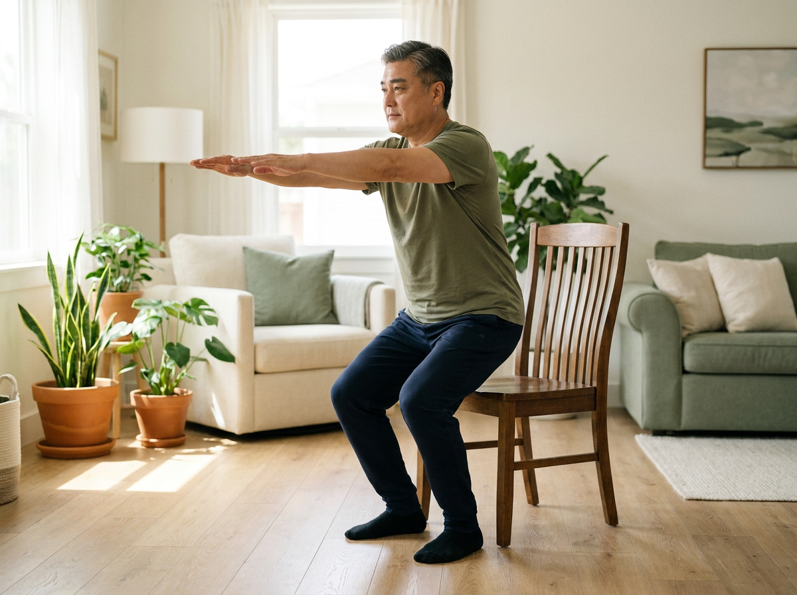
From a sturdy chair, stand up and sit down slowly without using your hands. Lower a cushion to make it harder over time.
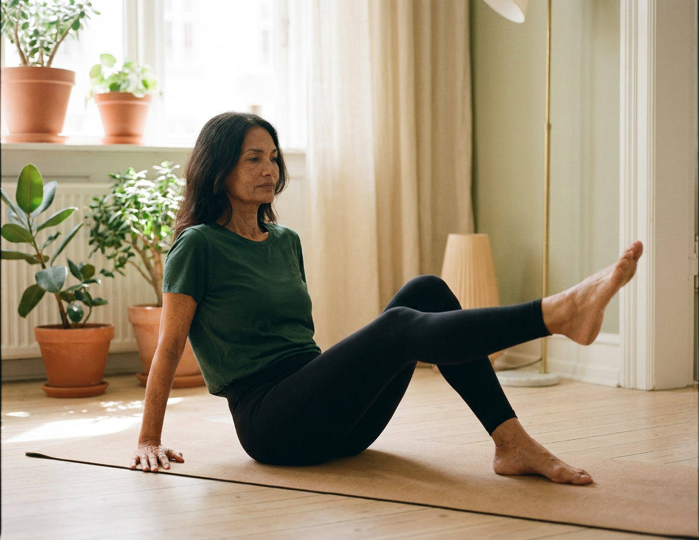
Lying or seated, keep the leg straight and lift it a few inches. Builds the quad without bending the sore knee.
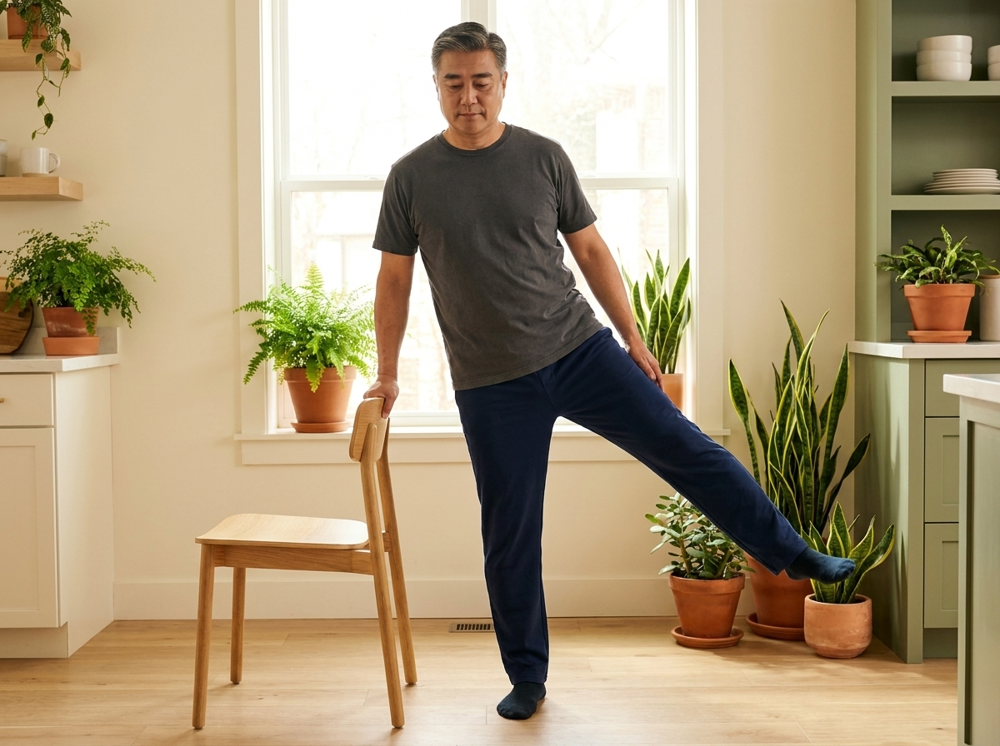
Hold a counter, lift one leg out to the side and lower slowly. Add a resistance band around the ankles to progress.
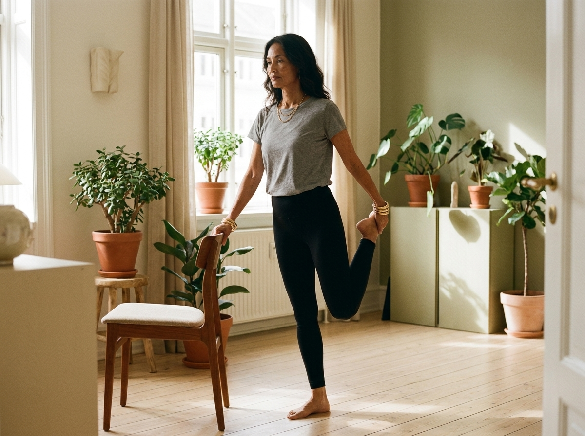
Holding a counter, bend one knee to bring the heel toward your bottom, then lower slowly. A band adds resistance.
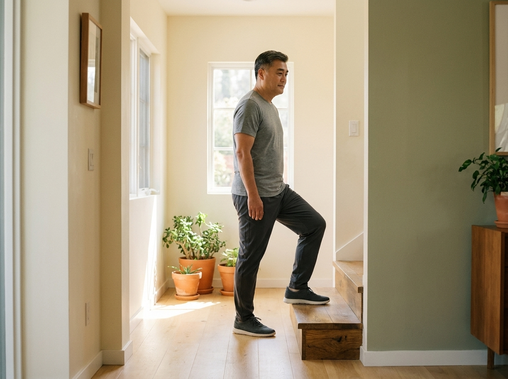
Step up onto a low, stable step and back down with control. Keep the step low to start.
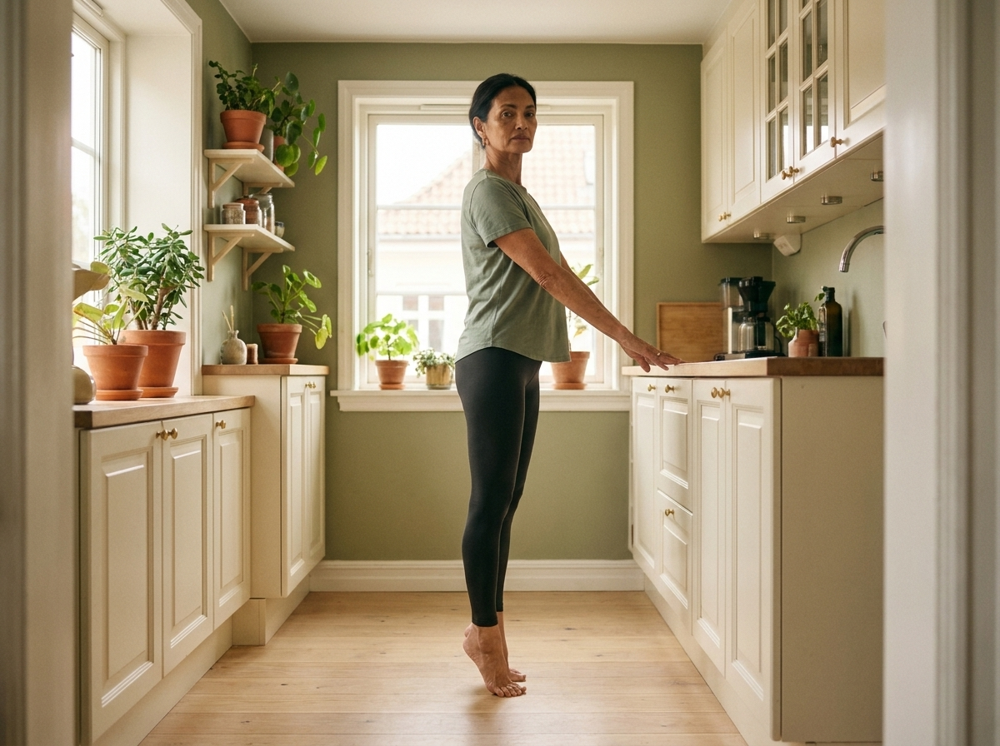
Rise onto the balls of your feet and lower slowly, holding a counter for balance.
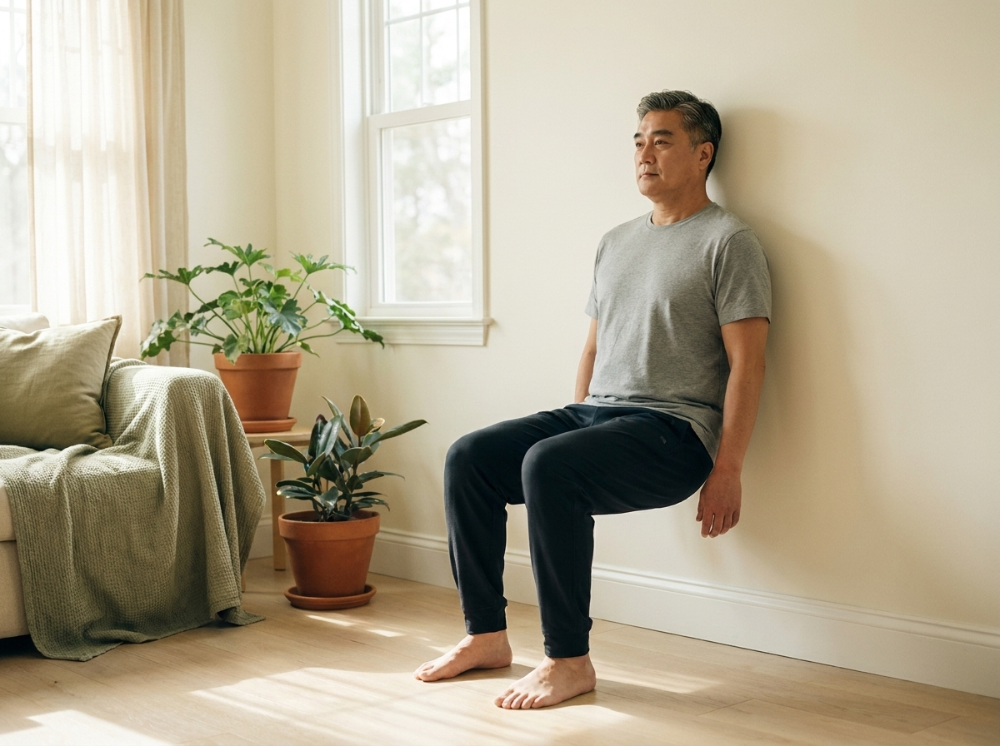
Slide down a wall to a shallow, comfortable angle and hold for 10 to 20 seconds. Never push into pain.
If you have access to machines, the same muscles can be trained with leg press, leg extension, leg curl, hip abduction and adduction, and a seated calf raise (the exercises used in the START trial). Start light, around a comfortable effort, and add small amounts over the weeks. Remember the trial’s lesson: steady and moderate beats heavy and harsh(6).
A gentle, progressive plan for someone starting fresh. Each stage covers two weeks. Tick a stage when you finish it, and your progress is saved on this device. If you already strength train, start around stage 3.
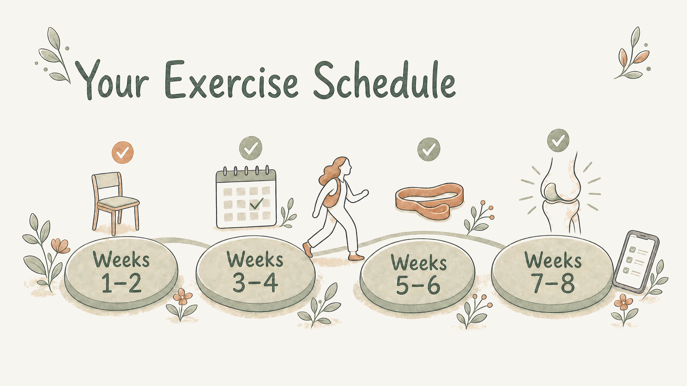
| Weeks | Your build | Done |
|---|---|---|
| 1 to 2 | Learn the moves. 2 sessions a week, 1 set of 8 to 10, bodyweight only. Focus on slow, controlled form. | |
| 3 to 4 | Build the habit. 2 to 3 sessions a week, 2 sets of 10. Still bodyweight, a little deeper range. | |
| 5 to 6 | Add resistance. 3 sessions a week, 2 to 3 sets of 12. Add a band or light weight where it feels easy. | |
| 7 to 8 | Get stronger. 3 sessions a week, 3 sets of 12 to 15. Progress load slowly, only as comfortable. |
Strengthening and aerobic movement work best together. On the days between strength sessions, keep up your Walk With Ease walks. The two reinforce each other: walking keeps the joint mobile, strength keeps it supported.
A little muscle soreness a day or two after a session is normal and fades. Sharp pain inside the joint, or pain that climbs week after week, is a sign to ease back: fewer sets, less range, or a lighter version of the move. Some swelling after activity can settle with rest and ice.
Strength does not come from one hard session. It comes from showing up two or three times a week, gently, for weeks. Small and steady is what builds a knee you can rely on.
This guide is for education and is not a substitute for your Clara doctor’s advice. Your plan is personalized to you.